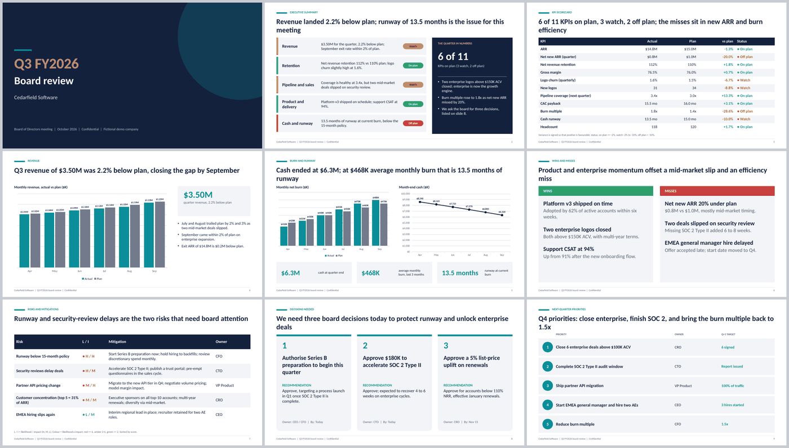
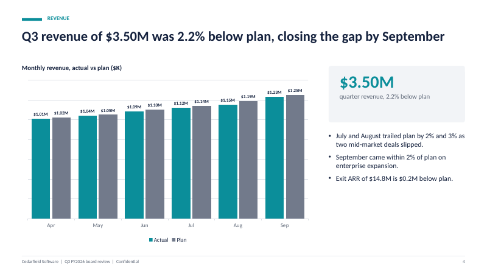

Board deck and QBR template, generated by AI
A board deck is read, not performed. This guide gives you a nine-slide structure that boards can scan in minutes, a prompt to generate it with an AI agent, and the checks that keep the numbers honest.
Short version: boards read decks, usually before the meeting. Open with the answer and the decisions you need, show status against plan, be upfront about misses, and finish with priorities that have owners and targets. Nine to twelve slides is plenty. AI can draft the structure and the maths if you give it the actuals; you own the judgement.

QBR or board deck?
A quarterly business review (QBR) can mean an internal review, a customer review or a board update. The structure below suits the first and third: leadership reviewing the business against plan. A customer-facing QBR (reporting value to a client account) is similar but swaps the finance slides for usage, outcomes and renewals. Several QBR guides suggest keeping the main body to roughly eight to twelve slides and moving backup data to an appendix. That is a reasonable rule, not a law.
The nine-slide structure
| # | Slide | What it must do |
|---|---|---|
| 1 | Title | Company, quarter, date, who is presenting. |
| 2 | Executive summary | Status per area (red, amber, green) and the quarter in a few numbers. Lead with the worst item. |
| 3 | KPI scorecard vs plan | Each KPI: actual, plan, variance, status. Say whether higher or lower is better. |
| 4 | Revenue actual vs plan | One chart, one message. |
| 5 | Burn, cash and runway | Net burn by month, cash at month end, months of runway. |
| 6 | Wins and misses | Honest. A deck with no misses is not believed. |
| 7 | Risks and mitigations | Likelihood, impact, mitigation, owner. Sorted by score. |
| 8 | Decisions needed | At most three, each with your recommendation. |
| 9 | Next-quarter priorities | Owner, target and the metric each one moves. |
The order follows how boards read: answer first, evidence next, asks last. If a slide does not support a decision or a risk, consider moving it to the appendix.
Write titles that state the so-what
“Revenue” is a label. “Revenue landed 2.2% below plan; runway is the issue” is a title. If a director reads only the titles on the way to the meeting, they should know what happened and what you want from them. Keep titles under two lines.
Step by step: generate it with AI
1. Collect the facts you will not let the AI invent
- Monthly revenue, actual and plan, for the quarter.
- Monthly net burn, actual and plan, plus opening cash.
- KPI actuals and plans, with direction for each (churn and burn multiple are better when lower).
- Wins and misses in plain language.
- Risks with likelihood and impact, mitigation and owner.
- The decisions you need, each with a recommendation.
- Next-quarter priorities with owners and targets.
2. Prompt with rules
Build a 9-slide board deck as a .pptx from actuals.csv and notes.md.
Structure: title, executive summary with RAG per area, KPI scorecard
vs plan, revenue vs plan chart, burn/cash/runway, wins and misses,
risks, decisions needed, next-quarter priorities.
Rules:
- Compute variances and runway in code from the data; never type them.
- For lower-is-better KPIs, invert the variance sign.
- RAG thresholds: green >= -2% vs plan, amber down to -10%, red below.
Print the status as a word, not only a colour.
- Titles state the takeaway. Lead the summary with the worst item.
- Use native, editable charts. Mark unknowns [TBD] and list them.Those RAG thresholds are an example; choose your own and write them on the slide or in a footnote so the board knows how the colours were decided.
3. Let the numbers be derived, not typed
The common errors in a board deck are arithmetic and inconsistency: quarter revenue that does not equal the sum of the months, runway computed from the wrong burn, or a decision count that disagrees between slides. Runway is cash divided by average recent net burn; many teams use the last three months. Say which you used. When a script computes these once and reuses them, the same figure cannot differ between slides.


4. Check the maths yourself
Pick three figures and recompute them by hand from your source: quarter revenue versus plan, ending cash, and runway. Check that each RAG colour matches its text, and that the number of decisions on slide 2 matches slide 8. Look at every slide as an image for overflow and cramped tables.
Doing this without buying anything
You do not need a special tool to follow this method. Claude Code with a general pptx skill (or Anthropic’s public document skills), the prompt above, and your own checks will produce a usable deck. What a purpose-built skill adds is a fixed layout, built-in variance and runway calculations, auto-fitting text and a QA script, so the result is more repeatable quarter to quarter. For the trade-offs, see Claude Code skills for PowerPoint.
Common mistakes
- Burying bad news. Boards punish surprises more than misses. Put the worst item first.
- Too many KPIs. If the scorecard has thirty rows, nothing is a priority. Pick the ones tied to the plan.
- No recommendation. “Decisions needed” with no recommended answer makes the board do your job.
- Priorities without owners. A priority with no owner, metric and resources is a wish.
- Colour as the only signal. Print the status word so it survives greyscale and colour-blindness.
The numbers behind slides 4 and 5 usually start in a model; here is how to build one with live formulas. For a lighter monthly pack, the KPI report guide covers a PDF from a CSV.
Disclosure: I make and sell Boardroom Skills. Nothing here is legal, financial or investment advice. Company names and numbers in screenshots are fictional.